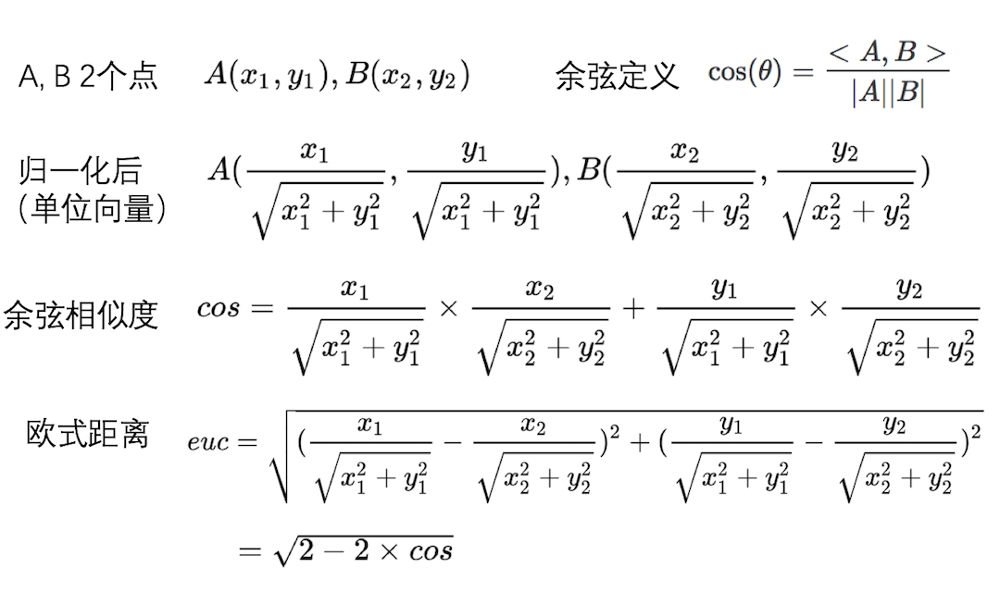

4. 余弦相似与欧氏距离有什么区别和联系
1）区别
假设 2人对三部电影的评分分别是 A = [3, 3, 3] 和 B = [5, 5, 5]
那么2人的欧式距离是 根号12 = 3.46， A、B的余弦相似度是1（方向完全一致）。
余弦值的范围是[-1, 1], 越接近于1，说明2个向量的方向越相近
欧式距离和余弦相似度都能度量2个向量之间的相似度，但是欧式距离从2点之间的距离去考量，余弦相似从2个向量之间的夹角去考量。 从上例可以发出，2人对三部电影的评价趋势是一致的，但是欧式距离并不能反映出这一点，余弦相似则能够很好地反应。余弦相似可以很好地规避指标刻度的差异，最常见的应用是计算 文本的相似度 。
2）联系
从下图的公式可以看出，归一化后计算的欧式距离是关于余弦相似的单调函数，可以认为归一化后，余弦相似与欧式距离效果是一致的（欧式距离越小等价于余弦相似度越大）。
因此可以将 求余弦相似转为求欧式距离 ，余弦相似的计算复杂度过高，转为求欧式距离后，可以借助KDTree（KNN算法用到）或者BallTree（对高维向量友好）来降低复杂度。
